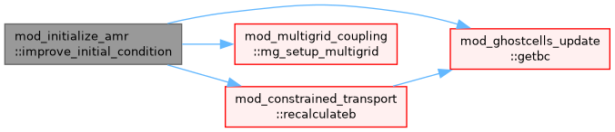
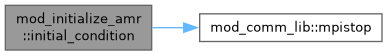
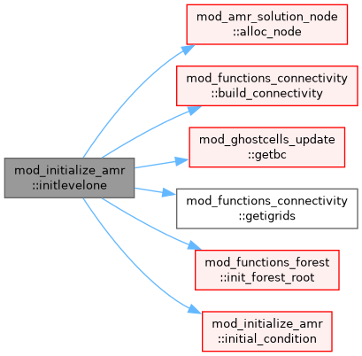
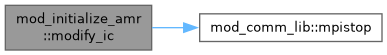

mod_initialize_amr Module Reference
Functions/Subroutines | |
| subroutine, public | initlevelone |
| Generate and initialize all grids at the coarsest level (level one). | |
| subroutine, public | initial_condition (igrid) |
| fill in initial condition | |
| subroutine, public | modify_ic |
| modify initial condition | |
| subroutine, public | improve_initial_condition () |
| improve initial condition after initialization | |
Function/Subroutine Documentation
◆ improve_initial_condition()
| subroutine, public mod_initialize_amr::improve_initial_condition |
improve initial condition after initialization
Definition at line 97 of file mod_initialize_amr.t.
Here is the call graph for this function:

◆ initial_condition()
| subroutine, public mod_initialize_amr::initial_condition | ( | integer, intent(in) | igrid | ) |
fill in initial condition
Definition at line 55 of file mod_initialize_amr.t.
Here is the call graph for this function:

◆ initlevelone()
| subroutine, public mod_initialize_amr::initlevelone |
Generate and initialize all grids at the coarsest level (level one).
Definition at line 16 of file mod_initialize_amr.t.
Here is the call graph for this function:

◆ modify_ic()
| subroutine, public mod_initialize_amr::modify_ic |
modify initial condition
Definition at line 76 of file mod_initialize_amr.t.
Here is the call graph for this function:

Generated by